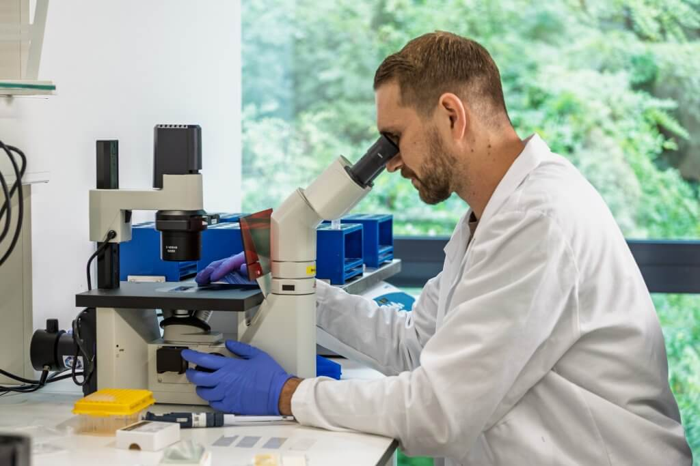

০৪
পুরনো পদ্ধতি বনাম নতুন গবেষণা

প্রচলিত পদ্ধতি
ঘোড়া বা ভেড়ার শরীর ব্যবহার করে অ্যান্টিবডি তৈরি — সময়সাপেক্ষ কিন্তু আজও সবচেয়ে ব্যবহৃত পদ্ধতি।

নতুন গবেষণা
জিন প্রযুক্তি ব্যবহার করে ল্যাবেই অ্যান্টিবডি তৈরির চেষ্টা চলছে — দ্রুত এবং প্রাণী-নির্ভরতাহীন।
🧬
রিকম্বিন্যান্ট অ্যান্টিবডি
জীবাণু বা কোষ ব্যবহার করে ল্যাবরেটরিতে সরাসরি অ্যান্টিবডি উৎপাদন।
🌐
সর্বজনীন অ্যান্টিভেনম
একাধিক প্রজাতির সাপের বিষের বিরুদ্ধে কার্যকর একটি একক ওষুধ তৈরির গবেষণা।
🖥️
কম্পিউটেশনাল ডিজাইন
বিষের আণবিক গঠন বিশ্লেষণ করে কৃত্রিম বুদ্ধিমত্তার মাধ্যমে অ্যান্টিবডি নকশা।